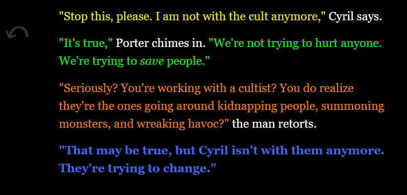

Games
Apocalypse: Green Wave
Play Apocalypse: Green Wave
This 2D Platformer and zombie shooter was my foray into game design with Unity and Github!
It introduced me to the game development process as we got used to basic dev tools in about one month.
My Contributions:
- Design Lead/Producer
- Programming player control and physics, camera, game systems
- Original music
- Art implementation
Phuong Mai Do (pdo@wpi.edu): Lead artist
Aidan Bryar (afbryar@wpi.edu): Additional programming
Created in Unity
Fall 2022
Slid Not Stirred
Play Slid Not Stirred
The fast-paced sidescroller where you platform as a glass sliding along the bar.
Slid Not Stirred was the winning game of IGDA WPI's Cutthroat Game Jam, which had the theme Don't Stop! (~30 participants)
My main takeaway from this game was how to be flexible and to adapt within tight deadlines.
We were given some fun restrictions like all sound effects originating from our voices, having to include a prominent MS Paint animation, and more!
My Contributions:
- Level Design
- Programming player damage handling, Game systems
- QA
- Audio remastering
Jacob Antepli (jaantepli@wpi.edu): Lead programmer and designer
Sarah Bodkin (sbodkin@wpi.edu): Art
Zach Adams (zadams@wpi.edu): Art
Created in Unity
April 2023
Hollow Revival
Play Hollow Revival
A character-focused narrative fantasy RPG made in two weeks.
I honed my leadership skills as we undertook this large project.
We each wrote a character quest, and I learned to trust my teammates as we brought the quests together into a cohesive narrative.
My Contributions:
- Design Lead
- Writer for Porter
- Combat design
- QA, editing
Cierra O'Grady (cmogrady@wpi.edu): Programmer, writer for Quent
Owen Pugh (orpugh@wpi.edu): Writer for Cyril
Elijah Delcastillo (eedelcastillo@wpi.edu): Writer for Eri

Created in Twine
December 2023
Cross-Stitch
Play Cross-Stitch
White to Grey - Grey to Black - Black to White
This simple yet head-scratching puzzle game is my first solo project!
I'm super proud of the mechanics I was able to implement in a short period of time.
This game taught me about the iterative approach to level design and
challenged me to improve player readability without using words or tutorials.
Created with Perlenspiel 3.3
February 2024
When it Rains
Play When it Rains
An arcade-style game that captures the manic feeling of Tetris in bite-size form.
This was my next solo project after Cross-Stitch.
I wanted to make a game that was small in scope, but nicely polished and complete, while also dipping my toes into 2D pixelart.
Can you reach a score of 100?
Created with Perlenspiel 3.3
February 2024
Projects
Software Engineering
Video Walkthrough
I was the Project Manager of a Software Engineering team of 11 students
tasked with creating a hospital website from scratch.
For much of the team, it was our first experience with Typescript and React, but we were able to
implement many features like multi-floor pathfinding, employee and service request management,
database hosting through AWS, an AI assistant, and an animated 3D map within 6 weeks.
We managed the project with Jira and Agile methodologies.
The link above is a video walkthrough of the website.
New Hampshire
I led a community project
working with the US Forest Service to develop lesson plans for students in New Hampshire.
Myself and 3 other WPI students stayed in Lincoln, New Hampshire for about 2 months working with
Brendan Leonardi, Program Manager and Field Technician at Hubbard Brook Experimental Forest.
We conducted background research, a focus group with Hubbard Brook staff, 7 interviews with local science educators,
systematic observations of tours of the forest, created 4 lesson plans,
and piloted 3 of them with local middle school students.
YouTube
I have been managing a gaming YouTube channel for over 6 years.
I showcase some of the most difficult and astounding levels made in the Super Mario Maker 2 community, and have amassed over 2900 followers.
On average, I upload a new video twice a week and the aspect of this project I'm most proud of is that
I've never gone a week without uploading a new video.
As a result of this, I have become well-versed in software like Davinci Resolve, Adobe Photoshop, and OBS.
I also frequently livestream myself playing on Twitch.
Speedrunning
One of my passions in gaming is speedrunning. I love delving deeply into the mechanics of a game and finding obscure oversights the devs missed.
I have been involved in speedrunning in Super Mario Maker 2, Super Mario Bros, and Mario Wonder,
and I was even invited to PACE Summer 2023, a charity event where I played RubberRoss's Mario Maker levels at a world record pace.
RubberRoss is a well-known YouTuber and streamer notorious for making very hard Mario stages, and he was floored by my ability to circumvent his challenges, as seen below.
You can see my full run with his reaction here
or the edited-down version here.
Education
I am pursuing a BS in Interactive Media and Game Development at Worcester Polytechnic Institute in Massachusetts.
I'm in the class of 2025, with a cumulative GPA of 3.86.
I am incredibly grateful for the opportunities opened up to me through WPI, including both the
Software Engineering project, and the Lesson Design Project in New Hampshire.
More than just knowledge of computer science, WPI has taught me time management and communication skills.
Most schools have 2 semesters with students taking 5 or 6 classes each, but WPI has quarters.
So I only have 3 courses at a time, but they are completed twice as fast.
This leads to a very fast-paced schedule, but I have been able to adapt and thrive in this environment.
Additionally, I started my college experience during COVID, and now I am completely comfortable working remotely, in-person, or hybrid.
WPI prides itself on its emphasis of project-based learning, which I believe prepares me for a job
in game development much better than lecture-based learning.
Work
I currently am the video editor for Stone Coast Community Church in Rhode Island.
Since March 2024, I have been editing and uploading the weekly services to the church's YouTube channel,
as well as creating 1-minute shorts from each recording.
I have been attending and volunteering on the tech team at this church since 2016.
Below is an image of some editing work I did for a Mother's Day video with the church's Youth Group.
About
Hello! My name is Will and I am a student at Worcester Polytechnic Institute in Massachusetts with a passion for game design. So far, I have finished 5 games, 3 of which were in collaboration with other WPI students. I'm pursuing a Technology BS in Interactive Media and Game Development. I'm interested in all aspects of game development, with a primary focus on game programming and design.
smithwm210@gmail.com
(774) 991-5477
LinkedIn